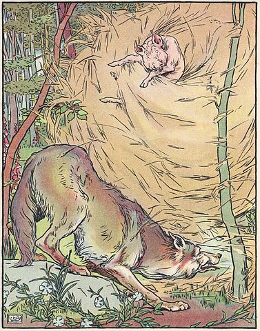
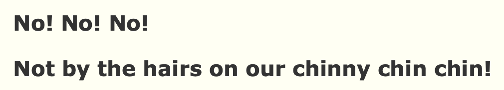
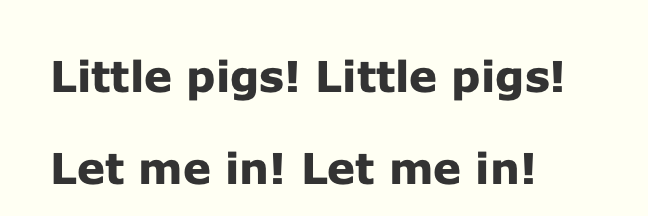
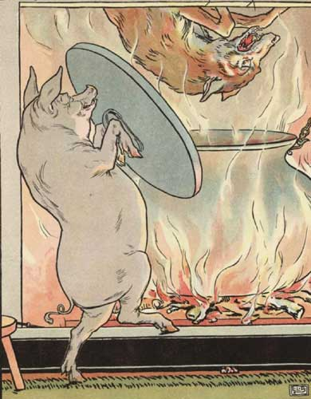

Once upon a time there was an old mother pig who had three little pigs
and not enough food to feed them. So when they were old enough,
she sent them out into the world to seek their fortunes.
The first little pig was very lazy. He didn't want to work at all and
he built his house out of straw. The second little pig worked a little bit
harder but he was somewhat lazy too and he built his house out of sticks.
Then, they sang and danced and played together the rest of the day.
The third little pig worked hard all day and built his house with bricks.
It was a sturdy house complete with a fine fireplace and chimney.
It looked like it could withstand the strongest winds.
The next day, a wolf happened to pass by the lane
where the three little pigs lived; and he saw the straw house,
and he smelled the pig inside. He thought the pig would make a mighty
fine meal and his mouth began to water.So he knocked on the door and said:

But the little pig saw the wolf's big paws through the keyhole, so
he answered back:
Then the wolf showed his teeth and said:
So he huffed and he puffed and he blew the house down! The wolf opened
his jaws very wide and bit down as hard as he could, but the first
little pig escaped and ran away to hide with the second little pig.
The wolf continued down the lane and he passed by the second house made of sticks;
and he saw the house, and he smelled the pigs inside, and his mouth began to water
as he thought about the fine dinner they would make.
So he knocked on the door and said:

But the little pigs saw the wolf's pointy ears through the keyhole, so
they answered back:

So the wolf showed his teeth and said:
So he huffed and he puffed and he blew the house down! The wolf was greedy
and he tried to catch both pigs at once, but he was too greedy and got neither!
His big jaws clamped down on nothing but air and the two little pigs scrambled
away as fast as their little hooves would carry them.
The wolf chased them down the lane and he almost caught them.
But they made it to the brick house and slammed the door closed before the
wolf could catch them. The three little pigs they were very frightened,
they knew the wolf wanted to eat them. And that was very, very true. T
he wolf hadn't eaten all day and he had worked up a large appetite chasing
the pigs around and now he could smell all three of them inside and he knew that
the three little pigs would make a lovely feast.

So the wolf knocked on the door and said:

But the little pigs saw the wolf's narrow eyes through the keyhole,
so they answered back:
So the wolf showed his teeth and said:
Well! he huffed and he puffed. He puffed and he huffed.
And he huffed, huffed, and he puffed, puffed; but he could not blow the house
down. At last, he was so out of breath that he couldn't huff and he couldn't
puff anymore. So he stopped to rest and thought a bit.
But this was too much. The wolf danced about with rage and swore
he would come down the chimney and eat up the little pig for his supper.
But while he was climbing on to the roof the little pig made up a blazing fire
and put on a big pot full of water to boil. Then, just as the wolf was coming
down the chimney, the little piggy pulled off the lid, and plop! in fell the
wolf into the scalding water.So the little piggy put on the cover again,
boiled the wolf up, and the three little pigs ate him for supper.
